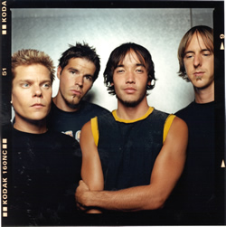
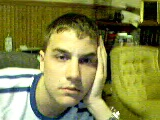
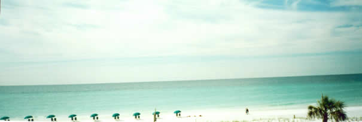
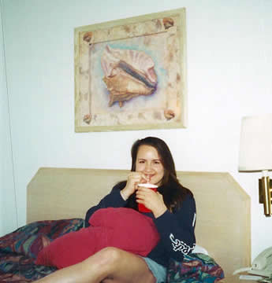
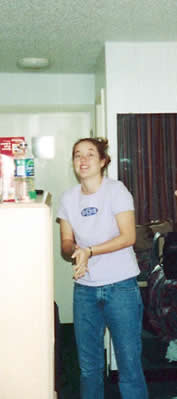

Welcome to my Spring Break! This has to be the best 5 days of the year, or else! In this SUPER SPECIAL JOURNAL SECTION, you'll find Spring Break pictures, my Spring Break Journal complete with the play by play of that particular day. Other then this...not much. I am thinking there will be a nice Spring Break 2002 wrap up at the end, but we'll have to see about that. Ok, well, enjoy your little piece of Nick's Spring Break 2002!
Monday, March 18th
Well, here I am really bored at my house now. Spring Break has started off pretty well. I had a nice three days here at home. I got alot of nice clothes for all the cruisin' I'll be doing down in Florida. I also got to see Katy, which I elaborated on last journal entry. Jennifer went and got me some vodka today for my sinful spring break exercises. I really wanted Everclear, but I'll take what I can get.
It was nice to do some shopping with Gen too. We had a nice time at Lenox. It's too bad all these Spring Break purchases are breaking the bank. Until I get my tax check, I'm going to be so broke. Oh well...that's life sometimes I guess.
I finally published my long awaited update. This means I will be doing NO more Friends pages. I will probably break down and do a few for some more of my friends eventually, but not now. I just don't have the energy or the desire.
Well, I'm off to go pack. I'm thinking tomorrow will be mostly driving and maybe a little drinking...but I think we'll go shopping for some drinking necessities. I'm thinking I'll be mixing my vodka with some Coke...and maybe Kool-aid. Oh, what fun games are to be had this week!
Tuesday, March 19th
Arrived at the Ramada Inn in Fort Walton Beach today! We got our drinking accesories and various food products. I'm basically all sooped up for beachin' tomorrow. I'm going to have a blissful time, I'm not going to let anything ruin my vacation. I really hope I don't get a sunburn, because that would be a major drag.
I had a little vodka tonight...BUT NO BUZZ! How fucking cruel is that??? I was upset, but I had a nice conversation with Missy about life and death...the strange things I talk about.
Tomorrow afternoon...laying on the beach and swimming while reading Sarah, having Cookies and Cream ice cream while basking in the sun...tomorrow night...getting really wasted with Missy and probably not remembering anything...I just hope I don't forget the time at the beach...Oh well, that's life sometimes.
I had a really strange sudden attraction to the lead singer of Hoobastank tonight...that guy is so fucking hot, I wish he would break down the door and bring it all night long...yeah...hehehe, I'm so perverse! A picture of him below...if you are not sure who he is, it doesn't matter, it's whoever the finest guy is, and if it isn't him, who gives a fuck...he's hot, that's all that matters!

Wednesday, March 20th
Tonight was certainly not what I expected it to be.
The day started out really optimistic, how I knew and wanted Spring Break to be. We went out the beach and the waves were so amazing and swimming turned out to be the highlight of the day. I wasn't able to eat my ice cream on the beach though, which sucked. I laid out for the day, but I didn't reapply my suntan lotion like I was supposed to, so that would cost me.
Took a nap after a beaching day. Woke up to the growing burning sensation on my legs...legs that I neglected to put lotion on. Ouch...
Got some alcohol before going out to a club in PC. I had alot to drink, defiantly got tipsy tonight! I was alittle uneasy about going to this club called Club Lavela. I tried to find another more fun place, but was alittle do involved talking to this guy Jeff that I was talking to. We ended up going to the club. On the way there, I sobered up enough to realize that my burned legs and absolute distain for str8 clubs would make this evening absolutely miserable. I tried to tell Missy this, but she wouldn't listen. We ended up at the door of the club where me and Gen let her know that we did not want to go in. Missy got really upset and started to cry, and because I didn't want to ruin her break, I decided to go in, waste $20 and be absolutely miserable. Needless to say, I left early and waited in the car with Gen. Missy stayed behind and danced with this ugly guy who offered the hook up. Of course she didn't take it.
We drove back to the hotel and Missy explored her desire to be associated with a scene like Lavela. This was an interesting conversation, but I don't think she was in the right state of mind to really do it right. Sleep is definitely needed after today...
Thursday, March 21st
I tried to make it back to the beach today. I had alittle trouble with an unruly beach umbrella. It went flying away from me and I had to jump into the ocean to fetch it. I needed it shield me from Mr. Sun. He was so cruel to me yesterday, I wasn't going to let him beat me up worse today. I got to read alittle intoSarah before reapplying sun tan lotion and walking off with Gen to the pier. Those bastards wanted to charge us $1 to walk down a pier. That's fucking ridiculous, they always want SOMETHING, you know...
Well, went back to the room, watched some T. V., took a nap. It's too bad Missy and Gen weren't up to do anything, so I talked to that Jeff guy some more and ordered a Pizza. It was a mellow night, but isn't that what vacations are for? Yep yep...that's exactly how I feel!
Friday, March 22nd
Last day in Florida. I decided not to let the sun get me at all today. I spent the morning finishing Sarah, which I found VERY engrossing. Gen and Missy then left the room to go beaching, and I started to bear what seemed like a very boring time in the room. I had no food and nothing to do, so I decided to scrouge up some quarters and get some candy treats to enjoy while watching what turned out to be a very interesting car chase. Adding Ice to my candy delights, I put the Do Not Disturb sign on the door and sought to enjoy some time alone. That's not what I got.
Gen entered the room apparently upset about me not letting the maids in to clean. I felt that since this was our last day in Florida and Gen would not be in the room the rest of the day that she should respect my desire to be left alone. I didn't want the maids to come rustling around while I'm seeking some solitary time. It made me so angry, I felt like she was watching me like some sort of parental figure, and I told her to just leave and that if it was that important to her, I would let the maids come in. She proceeded to wait at the door to make sure that the maids would be aloud to clean, but then left after it took she realized they were taking their time. After Missy left from coming up for whatever she needed, I proceeded to enjoy my ice and candy, and, satisfied with my sufficient alone time, heard a knock at the door, let the maids clean, and went outside to work on my poem. It worked out ok, and I just let it go like water under the bridge, hoping that Gen didn't actually think I was that upset with her about it.
On our last night, Missy's gracious parents treated us to a wonderful dinner. I have never had such an enjoyable dining experience! I forget the restaurant, but every bite was bliss.
Missy wanted to go out again to some club next to our hotel. Knowing that I would not like it, I told her no. We ended up doing nothing. I hope Missy doesn't resent that. I wish I could be that person that goes out with her and always has a great time, but I just can't do it. We definitely complement each other in other ways, and I hope she realizes that. Driving home tomorrow, could definitely use some home time...
In Closing
Spring Break was definitely not what I expected it to be. Thinking the drinking is going to yield some sort of party lifestyle was really foolish. That's not me anyways, fooling myself into thinking that was a mistake. I had fun though, I did something, I got tan, and I think it was successful. I'm broke off my ass, but what can ya do, you know! Hope your break was as fun!
Pictures
I don't have much yet, but I will have a few a little later on when I get them developed. I toke these pictures when I got home, they'll have to do you for now...one of them is on my front page, but it belongs here.
Yah, this is my picture face, no more boring stare into nothing...

I'm attempting her to recreate my other front page picture, but it just wouldn't work...
Tuesday, May 28th
Well, I finally have pictures from that little trip I took long long ago. I hope that you enjoy! There is nice pictures of Missy and Gen as well as myself...though I didn't take pictures...

Here is a nice panoramic of our view from the hotel room.

Missy enjoys a cool alcoholic beverage before getting the living daylights FUCKED out of her by the hot guy down the hall...j/k!

Gen is enjoying some of our Spring Break snacks!